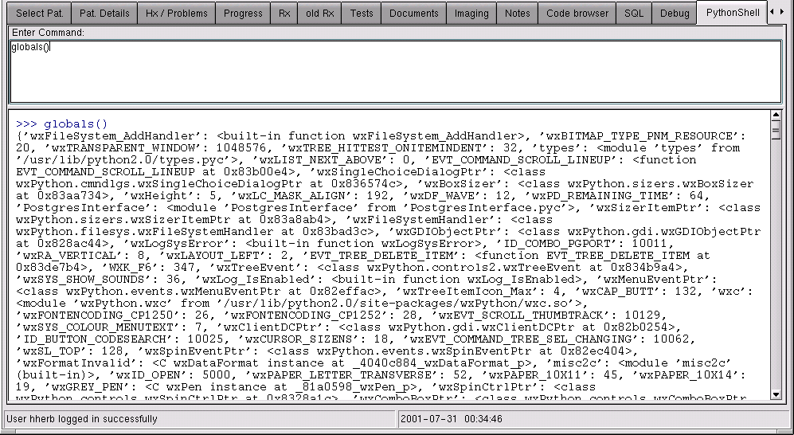

GNUMed comes with batteries included. Those programming in Python will understand the hint. For those who are not: You can not only extend the functionality of the PostgreSQL backend in Python, as Python is now one of the officially "built-in" languages in Postgres, but you can also interact life with any object of the GNUMed client in Python - from within the client! Magic? No. Better. Python.
The GNUMed client version that is written in Python/wxPython has a built in shell window. It is not just an ordinary shell with access to command line Python. It is a shell window with access to all symbols of the running application, that is - the GNUMed client itself
What an incredible tool to experiment with the user interface! What an incredible debugging tool! You could even rewrite the client from within itself and then reload it without even loosing the database connection!
For those sceptical or worrying this might break the application in the hands of the unexperienced user: no worries. This is why all important programming logic happens on the server, which can't be accessed that way (well, actually it can, but it requires enough knowledge that warrants that the one doing it knows what he or she is doing.
Enough talk. Have a look yourself: here is the one and only GNUMed python shell, displaying a few of its internal symbols. Believe it now? You better.

On one of the ususally "hidden" notebook tabs displays the Python shell Window. The upper part allows interactive input, the lower part of the dialogue displays the output.
Technically, an instance of the python interpreter is started as a new process. The dictionary of all internal symbols of the virtual Python machine which is running the client is passed as parameter (by reference, of course) to the new python instance. All output is redirected to a wxText widget (which scrolls automatically), and all input is piped from the upper text widget into the python interpreter.
It works, as far as I could test it. This is one cute part of the GNUMed project crying for adoption. Who wants to nurse this baby into adulthood? Please contact the coordinator.